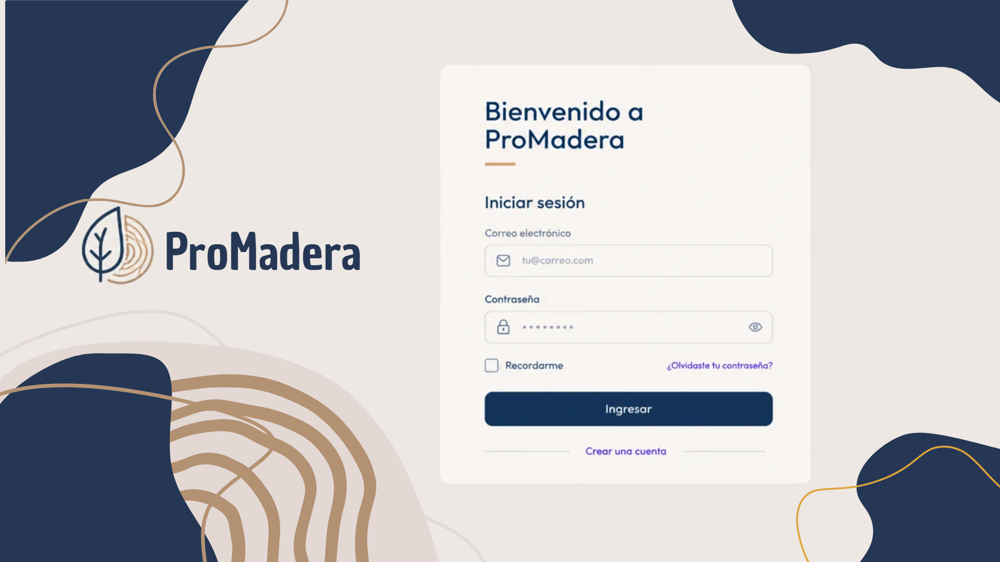

ProMadera
Rol: Desarrollador Full-Stack y Scrum Master
Plataforma web integral que conecta talleres de carpintería con corralones de materiales. Incluye gestión de stock, comunidad de diseños y armado de presupuestos.
- React
- FastAPI
- Python
- Supabase
- Git